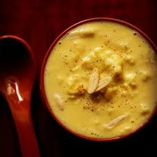

Gulab Jamun
Ingredients:
- Milk powder or Khoya
- All-purpose flour (Maida)
- Baking powder
- Butter or Ghee
- Milk
Recipe:
- Make the Dough: Combine milk powder, all-purpose flour, baking powder, and ghee. Gradually add milk to form a smooth dough.
- Shape the Dough: Roll the dough into small, smooth balls.
- Prepare the Syrup: In a pan, dissolve sugar in water over medium heat. Add cardamom powder and rose water or saffron if using. Let it simmer until it becomes a sticky syrup.
- Fry the Dough Balls: Heat ghee or oil in a pan over medium heat. Fry the dough balls until they are golden brown.
- Soak in Syrup: Place the fried balls in the warm syrup and let them soak for at least 30 minutes.

Rabri
Ingredients:
- Whole Milk
- Sugar
- Cardamom Powder
- Saffron Strands
- Chopped Nuts
- Rose Water or Kewra Water
Recipe:
- Boil the Milk: In a heavy-bottomed pan, bring the whole milk to a boil.
- Reduce the Milk: Continuously simmer and stir the milk, allowing it to reduce and thicken. Scrape the sides of the pan to incorporate the malai (cream) back into the milk.
- Add Sugar and Flavorings: Once the milk has thickened to your desired consistency, add sugar, cardamom powder, saffron strands, and rose or kewra water if using. Stir well to combine.
- Cool and Garnish: Allow the mixture to cool, then garnish with chopped nuts before serving.

Roshogolla
Ingredients:
- Milk
- Lemon Juice or Vinegar
- Water
- Sugar
- Cardamom
- Rose Water or Kewra Water (optional)
Recipe:
- Making chhena
- Boil the milk and add lemon juice or vinegar to curdle it.
- Strain the curdled milk using a muslin cloth to separate the chhena.
- Rinse the chhena under cold water to remove the lemon or vinegar taste, then squeeze out excess water and hang it for about 30 minutes to remove any remaining moisture.
- Kneading Chhena:
- Knead the chhena until it becomes smooth and soft. This step is crucial for ensuring soft and spongy Rasgullas.
- Divide the kneaded chhena into small, smooth balls without any cracks.
- Preparing Sugar Syrup:
- In a large pot, combine water and sugar. Bring it to a boil to create a thin sugar syrup.
- Optionally, add cardamom or rose water/kewra water for additional flavor.
- Cooking Rasgullas:
- Add the chhena balls to the boiling sugar syrup.
- Cover the pot and cook on medium heat for about 15-20 minutes. The Rasgullas will double in size as they cook.
- Ensure that the syrup remains boiling throughout the cooking process. If it thickens too much, add a little more water.
- Cooling and Serving:
- Once cooked, let the Rasgullas cool in the syrup.
- Serve chilled or at room temperature.